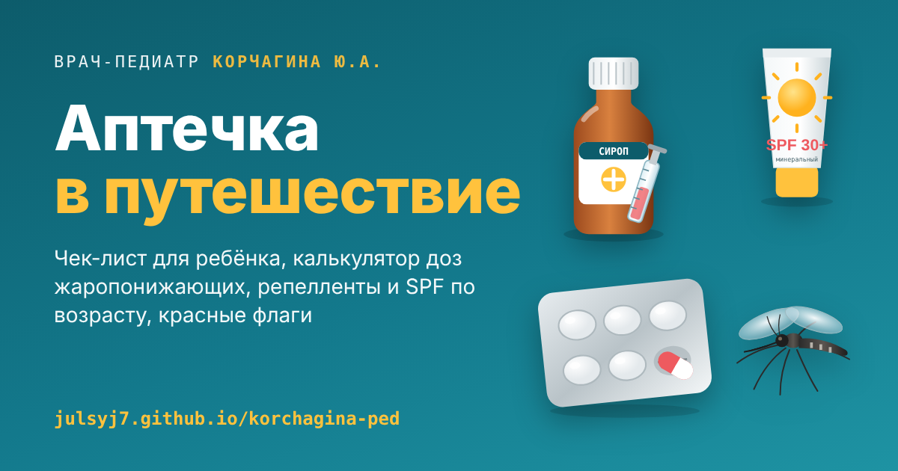
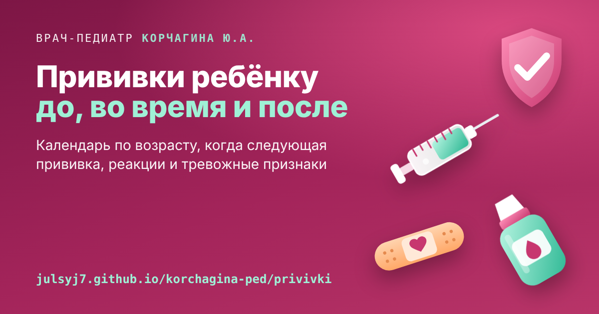
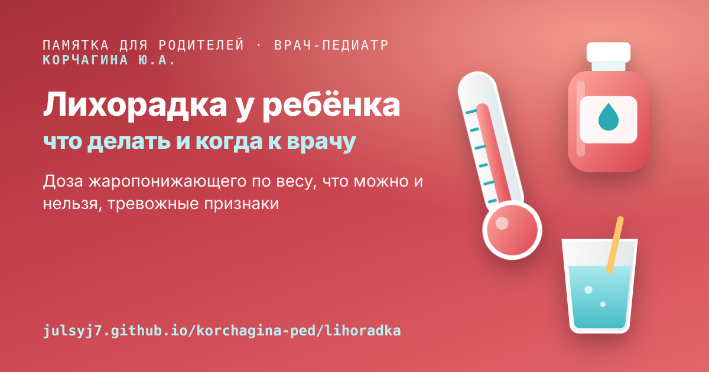
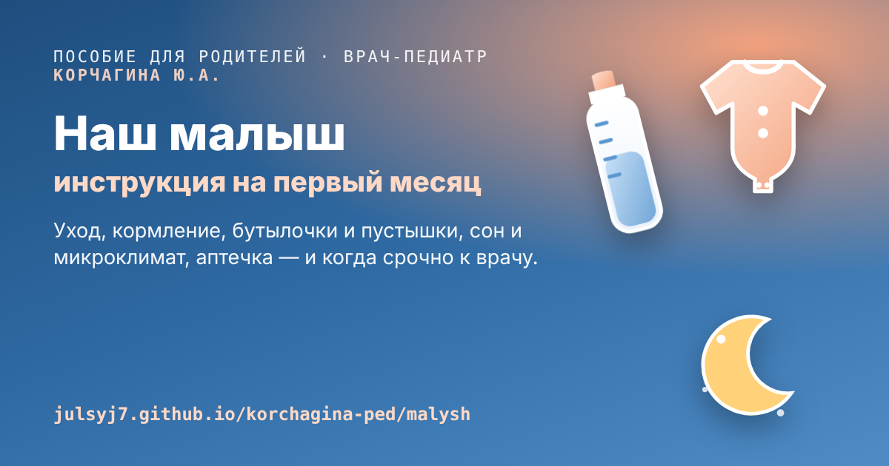
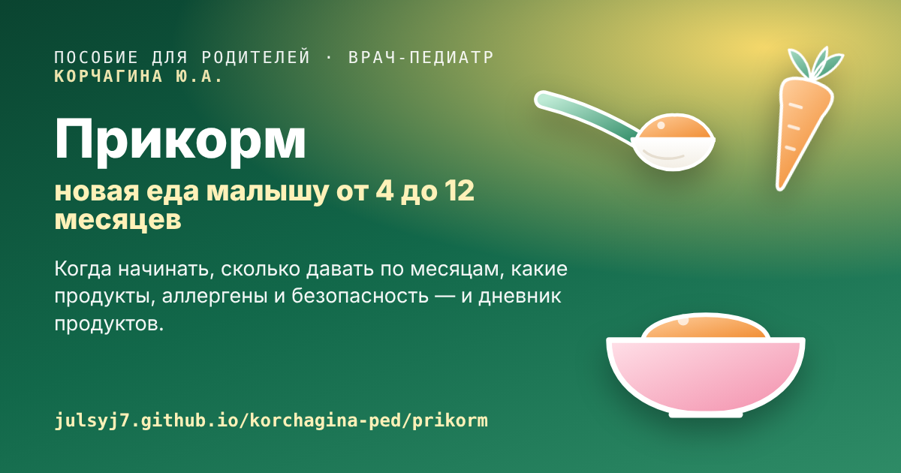

Памятки для родителей
Каждая памятка — отдельная страница: её можно сохранить на телефон, и дальше она открывается без интернета.

Аптечка в путешествие
что взять ребёнку в поездкуЧек-лист аптечки, дозы жаропонижающих по весу, репелленты и солнцезащитные средства по возрасту, тревожные признаки.
Открыть памятку
Прививки ребёнку
до, во время и послеКалендарь по возрасту, мой график прививок, калькулятор следующей прививки, реакции на каждую вакцину и тревожные признаки.
Открыть памятку
Лихорадка у ребёнка
что делать и когда к врачуДоза жаропонижающего по весу, что делать дома при температуре, дневник температуры, когда вызывать скорую.
Открыть памятку
Наш малыш
инструкция на первый месяцУход за новорождённым, кормление грудью и смесью, сон, аптечка и тревожные признаки.
Открыть памятку
Прикорм
от 4 до 12 месяцевКогда начинать, порции по месяцам, аллергены, безопасность, прикорм кусочками и дневник продуктов.
Открыть памяткуОбразование и квалификация
Образование
- 2023РНИМУ им. Н.И. Пирогова
Специальность «Педиатрия»
Повышение квалификации
- 2025Педиатрия
Московский центр аккредитации и профессионального развития в сфере здравоохранения
- 2025Перинатология
Ведение новорождённого ребёнка в первичном звене
- 2025Психология общения
Основы конфликтологии и профилактика конфликтных ситуаций
- 2024Сердечно-лёгочная реанимация
На догоспитальном этапе, для врачей поликлиник
Коротко
- Врач-педиатр с 2023 года
- Действующая аккредитация по педиатрии
- Языки: русский, английский
Сохраните памятку на телефон
По QR-коду, который дал врач, или из списка выше.
iPhone: «Поделиться» → «На экран „Домой“». Android: меню ⋮ → «Установить приложение».
Ваши данные — дата рождения, вес, отметки — хранятся только на вашем телефоне.
Памятки не заменяют осмотр врача. Если ребёнку плохо или вы сомневаетесь — обратитесь к педиатру, а в экстренной ситуации вызывайте скорую помощь по номеру 103.